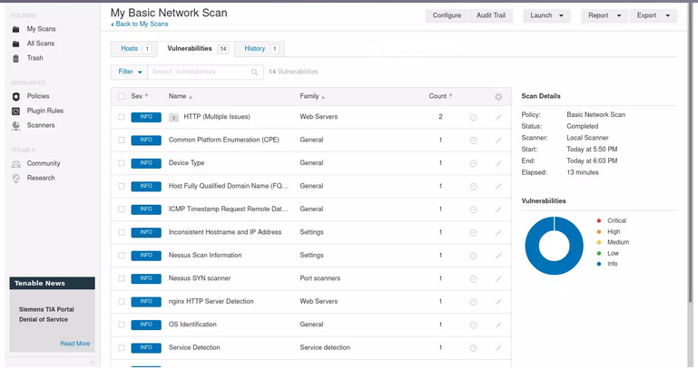

Как запустить Metasploit Framework в Kali Linux 2020.x
Как запустить Metasploit Framework в Kali Linux 2020.xДобро пожаловать в одно из практических руководств Kali Linux по установке сканера уязвимостей Nessus на Kali Linux 2020.x.
Nessus – это широко используемый проприетарный инструмент оценки уязвимостей как для веб-приложений, так и для мобильных приложений.
Nessus создан для того, чтобы помочь вам уменьшить площадь атаки вашей организации и обеспечить совместимость в виртуальных, физических, мобильных и облачных средах.
Nessus располагает крупнейшей в мире постоянно обновляемой библиотекой проверок уязвимости и конфигурации.
Это гарантирует скорость и точность.
С Nessus вы можете проверять следующие среды:
Пакеты сканеров Nessus доступны на странице загрузок Nessus.
Подтвердите последний выпуск Nessus для Debian / Kali Linux.
На момент написания статьи доступной версией является Nessus – 8.9.0.
Загрузите пакет и убедитесь, что он доступен локально для установки.
$ ls Nessus-8.9.0-debian6_amd64.deb
Nessus-8.9.0-debian6_amd64.deb
Установите уязвимость Nessus, отсканированную в Kali Linux, с помощью приведенной ниже команды.
$ sudo dpkg -i Nessus-8.9.0-debian6_amd64.deb
Reading package lists... Done
Building dependency tree
Reading state information... Done
Note, selecting 'nessus' instead of './Nessus-8.9.0-debian6_amd64.deb'
The following NEW packages will be installed:
nessus
0 upgraded, 1 newly installed, 0 to remove and 21 not upgraded.
Need to get 0 B/86.2 MB of archives.
After this operation, 0 B of additional disk space will be used.
Get:1 /home/jkmutai/Nessus-8.9.0-debian6_amd64.deb nessus amd64 8.9.0 [86.2 MB]
Selecting previously unselected package nessus.
(Reading database ... 274633 files and directories currently installed.)
Preparing to unpack .../Nessus-8.9.0-debian6_amd64.deb ...
Unpacking nessus (8.9.0) ...
Setting up nessus (8.9.0) ...
Unpacking Nessus Scanner Core Components...
- You can start Nessus Scanner by typing /etc/init.d/nessusd start
- Then go to https://kali:8834/ to configure your scanner
Processing triggers for systemd (244.1-1) ...
Эта же команда будет использоваться при обновлении сканера уязвимостей Nessus в Kali Linux.
Вам только надо будет изменить имя файла.
После установки пакета необходимо запустить службу, необходимую для работы сканера уязвимостей Nessus.
sudo systemctl enable nessusd
sudo systemctl start nessusd
Убедитесь, что nessusd действительно запущен и работает.
$ systemctl status nessusd.service
● nessusd.service - LSB: Starts and stops the Nessus
Loaded: loaded (/etc/init.d/nessusd; generated)
Active: active (running) since Sun 2020-02-23 08:37:47 EST; 1s ago
Docs: man:systemd-sysv-generator(8)
Process: 19079 ExecStart=/etc/init.d/nessusd start (code=exited, status=0/SUCCESS)
Tasks: 19 (limit: 2318)
Memory: 70.2M
CGroup: /system.slice/nessusd.service
├─19081 /opt/nessus/sbin/nessus-service -D -q
└─19082 nessusd -q
.....
Демон Nessus слушает порт TCP 8834.
$ sudo ss -ant | grep 8834
LISTEN 0 1024 0.0.0.0:8834 0.0.0.0:*
LISTEN 0 1024 [::]:8834 [::]:*
Чтобы завершить установку и активацию Nessus, зайдите на веб-интерфейс Nessus по IP-адресу сервера и порту 8834 или имени хоста.
В моем случае:
https://192.168.122.124:8834/
На первой странице выберите продукт Nessus.
Поскольку я выбрал установку Nessus Essentials, я предоставлю личную информацию для получения электронного письма с бесплатным кодом активации Nessus Essentials.
Теперь зарегистрируйте Nessus, введя код активации, полученный по электронной почте.
Создайте учетную запись администратора Nessus на следующей странице.
Nessus начнет подготовку файлов, необходимых для сканирования ваших активов.
Имейте в виду, что это может занять некоторое время, пока Nessus загрузит плагины и подготовит файлы, необходимые для сканирования.
Страница Nessus по умолчанию при входе в систему должна выглядеть примерно так:
Добавьте свои сети, чтобы начать сканирование.
